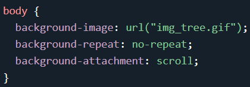

Alem de background-color e background-imagen:linear-gradient, temos como colocar uma imagem background-image:url(' ')
Definição e uso
A background-origin propriedade especifica a posição de origem (a área de posicionamento do plano de fundo) de uma imagem de plano de fundo.
- padding-box
- border-box
- content-box
- initial
- inherit
Exemplos
Padding-box
Bloco 1
border-box
Bloco 2
Content-box
Bloco 3
A background-position propriedade define a posição inicial de uma imagem de fundo.
Dica: Por padrão, uma imagem de plano de fundo é colocada no canto superior esquerdo(left top) de um elemento e repetida vertical e horizontalmente.
Exemplos

Posicionamento padrao (background-position: left top)
Direita em baixo (background-position: right bottom)
Centro e Centro (background-position: center center)
A background-size propriedade especifica o tamanho das imagens de fundo.
Existem quatro sintaxes diferentes que você pode usar com esta propriedade: a sintaxe da palavra-chave ("auto", "cover" e "contain"), a sintaxe de um valor (define a largura da imagem (a altura se torna "auto"), a sintaxe de dois valores (primeiro valor: largura da imagem, segundo valor: altura) e a sintaxe de fundo múltiplo (separada por vírgula).


A background-attachmentpropriedade define se uma imagem de plano de fundo rola com o restante da página ou é fixa.

Shorthand Background
color > image > repeat > >attachment > position
Size fazer individual